Approach 1
Overview
This report contains a summary of 'Approach 1', which uses SustHerb biomass equations to estimate volume (and ultimately, albedo) for relevant study plots. The report covers each step of the analysis and discusses potential limitations/assumptions associated with each step.

Data
Data Selection
SustHerb Data
I chose to use data from SustHerb sites in Trøndelag from the year 2016 (15 study sites with 3396 tree observations). This subset appears to be the only data with detailed measurements for diameter at ground level (DGL) and height, both of which are necessary for the locally-calibrated allometric biomass equations that were created by Kolstad et al. (2017).
3 tree observations were removed from the dataset, as these observations didn’t have any associated DGL or height measurements (and thus, couldn’t be used to calculate albedo in subsequent steps). Additionally, 2 observations of trees with a height greater than 600cm (6m) were removed, as these were likely left over from forestry operations. 6m is the height threshold used by Kolstad et al. (2017). The total number of tree observations for this approach is therefore 3391.
I also included "years since clearcut" data for each SustHerb site included in this approach. Many of the sites were clearcut at different times, and therefore, are in varying stages of succession.
seNorge Climate Data
The albedo model developed by Hu et al. (2018) accepts two climate parameters: (1) monthly average snow-water equivalent (mm) and (2) monthly average temperature (K). seNorge provides this data across the entire country of Norway in the form of spatially-gridded daily estimates with a 1km2 resolution. Thus, it was possible to use obtain relevant time series data for each study site used in this approach.
Each time series was filtered to the year 2016 in order to align with the dates of corresponding tree observations. Monthly averages of temperature (C) and snow-water equivalent (mm) were calculated from each time series. Temperature was converted to K for use with the albedo model. The total number of temperature observations is therefore 180 (12 months x 15 sites). The total number of snow-water equivalent observations is also 180 (12 months x 15 sites).
Productivity Index
Site productivity is likely an important variable to control for when attempting to determine the effect of moose exclusion on forest surface albedo. Therefore, I decided to include data from the site productivity index that was developed by Kolstad et al. (2017). This index is based upon a standardized value for mean annual increment in aboveground biomass.
Herbivore Densities
Densities of various herbivores may have important effects on vegetation states within forest ecosystems, and therefore, it is likely relevant to control for relevant herbivore densities in our final analysis. In addition to moose, both red deer and roe deer are important herbivores in Norwegian boreal forests. Thus, I decided to include densities of moose, red deer, and roe deer in the final model for this approach.
Speed et al. (2019) and Austrheim et al. (2011) calculated metabolic biomass (kg/km2) of many different large herbivores in each Norwegian municipality (for 1949, 1959, 1969, 1979, 1989, 1999, 2009, and 2015), which allows us to include herbivore densities as covariates in our final model. Because this specific approach is using tree data from 2016, I decided to use herbivore data from the closest possible year (2015). For each Sustherb site, I pulled herbivore densities for the corresponding Norwegian kommune based on "Kommune ID".
Forest Canopy MAD
Surface roughness (and therefore forest canopy roughness) may be an important factor in surface albedo. Snøan (2019) used airborne laser measurements (LiDAR) to examine the effects of moose exclusion on boreal forest canopy, and found that moose exclusion significantly altered forest canopy mean absolute deviation (MAD), which is a metric for canopy roughness. Therefore, I decided to include the LiDAR-derived canopy MAD measurements produced by Snøan (2019) in the final analysis for this approach.
Data Summary
SustHerb Dataset
Summary
| B | UB | |
|---|---|---|
| Betula pendula (Lavlandbjørk) | 12 | 0 |
| Betula pubescens (Bjørk) | 588 | 373 |
| Juniperus communis (Einer) | 27 | 3 |
| Picea abies (Gran) | 133 | 117 |
| Pinus sylvestris (Furu) | 260 | 390 |
| Salix caprea (Selje) | 77 | 20 |
| Sorbus aucuparia (Rogn) | 674 | 717 |
Tree Heights
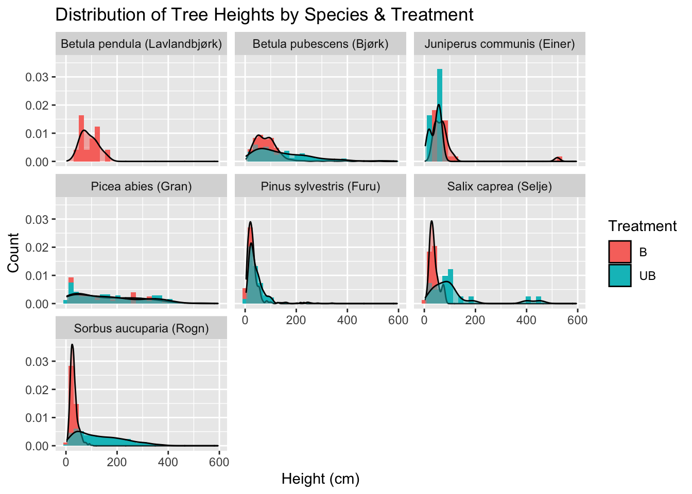
Tree DGL
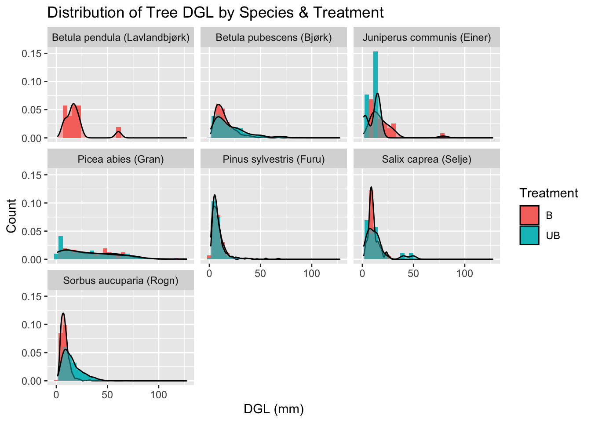
Tree Species Proportions
seNorge Data
Snow-Water Equivalent
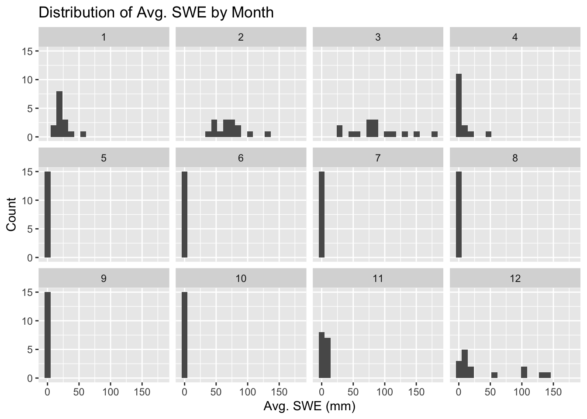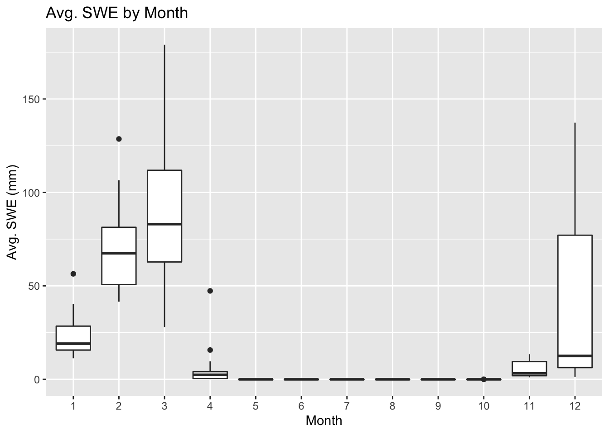
Temperature
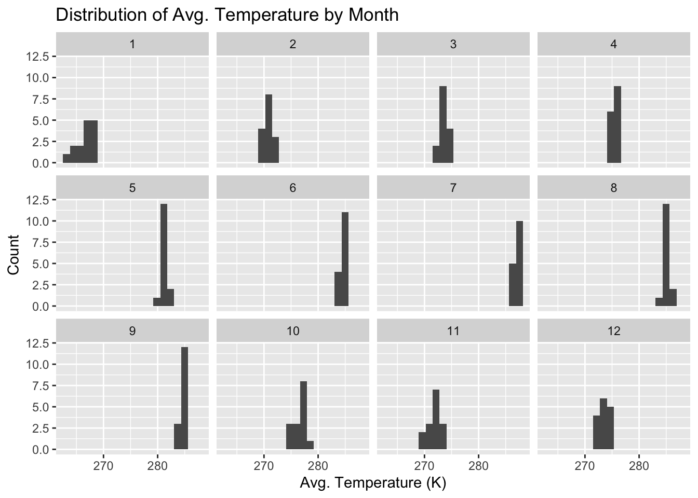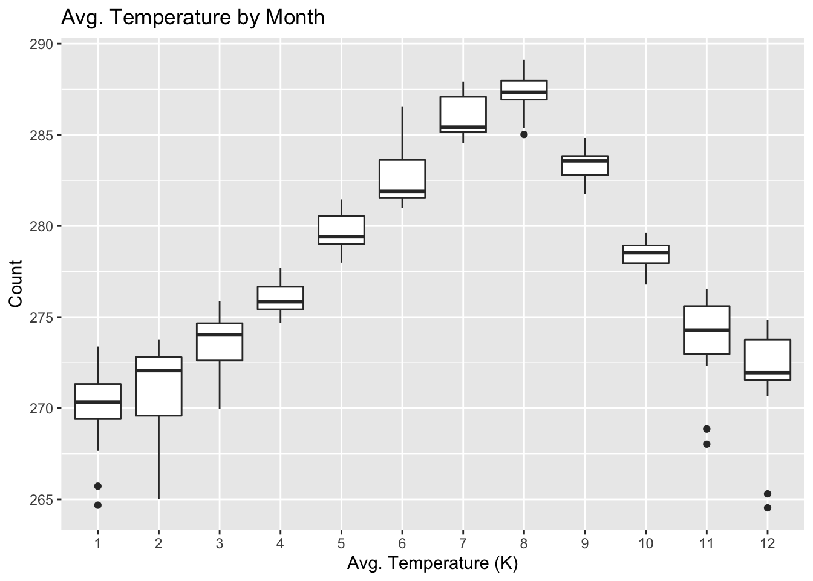
Productivity Index
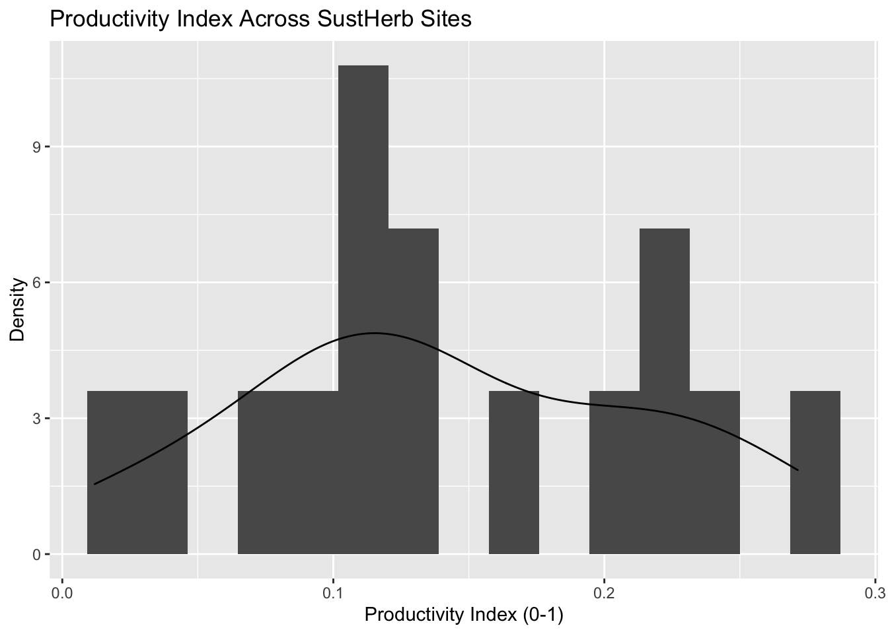
Herbivore Densities
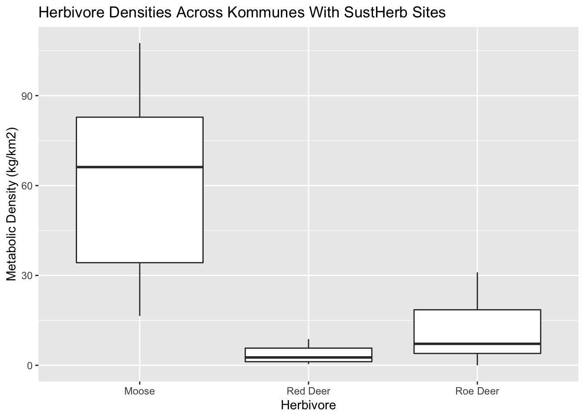
Volume Calculations
Reasoning
Using existing volume equations:
The goal with this step was to calculate volume for each tree in the dataset. These volumes would then be summed at the plot level and used to estimate albedo for each plot. Initially, I wanted to use species-specific allometric tree volume equations, which were developed by the Norwegian National Forest Inventory (NFI) for use in Norway. In fact, these equations were used to calculate forest stand volume for the test plots on which the volume parameter of the SatSkog data product is based upon. FYI - the albedo model developed by Hu et al. (2018) is based upon the SatSkog product. The equations are available in the form of an R package called "sitreeE", but are based on volume tables developed by Braastad (1966), Brantseg (1967), and Vestjordet (1967).
However, after testing these equations on the dataset, I found that most estimates of volume (especially those for trees <150cm in height) were negative or obviously erroneous. It seems that the NFI allometric volume equations only perform well for trees that have a certain height or diameter, and wouldn't be useful for the dataset that we have.
I also investigated other allometric volume equations specific to Norwegian tree species of interest. The online database GlobAllomeTree contains many relevant equations. However, most of these equations require a diameter at breast height (DBH) measurement, as opposed to a DGL measurement (which is what a majority of trees in the dataset have). Additionally, a review by Zianis et al. (2005) shows that almost all allometric volume equations for species of interest are limited to trees with a diameter of several centimeters or a height of 1.5 meters.
Key point: using existing allometric volume equations doesn't seem possible for this approach.
Converting from biomass to volume:
Without more detailed and impractical data (such as measurements of trunk diameter at evenly-spaced intervals along each tree), other methods of calculating volume didn't seem to be possible. However, Kolstad et al. (2017) previously produced species-specific, locally-calibrated allometric biomass models. I thought that we could use these models to calculate biomass (g) for each tree in the dataset, and then somehow convert that biomass to volume (m3).
There is abundant literature which focuses on converting tree volume to biomass (for carbon accounting purposes). However, I have not been able to find relevant literature related to converting tree biomass to volume. My first thought was that if we knew wood density for each tree species of interest, we could use the simple equation \(Volume = mass / density\) to estimate volume from biomass.
However, using wood density in this manner may be substantially flawed. Repola (2006) found that vertical wood density gradients are present in Norwegian species of interest - that is, wood density changes throughout the vertical length of a given tree trunk. Thus, attempting to calculate tree volume from a single wood density value may produce innacurate volume estimates and introduce substantial error into subsequent steps of the approach. Despite this issue, there didn't seem to be a better way to calculate volume for each tree from available data.
For the wood densities (also sometimes referred to as 'specific gravities'), I chose to use the "measured densities" from Repola (2006). These densities were produced by measuring the density of 2-3cm disks taken at a 1m interval for the entire length of 327 pine, 317 spruce, and 192 birch specimens (harvested in Finland, not Norway). For each species, densities were averaged to produce a corresponding "measured density".
It is important to note that DBH of trees sampled by Repola (2006) ranged from 5-48 cm. Additionally, the minimum age of trees sampled was estimated to be 20 years old. These sample characteristics ultimately represent another source of error - most of the trees in the SustHerb dataset are much smaller and younger, and therefore, may have completely different densities than those provided by Repola (2006).
Key point: best option to calculate volume seemed to be \(Volume = mass/density\). Densities taken from Repola (2006)
Handling less-common species
The dataset includes observations of two species - Juniperus communis and Salix caprea - which don't have corresponding allometric equations and are less common than the main species of interest. For the purposes of this approach, I essentially categorized J. communis to be the same as Picea abies - the allometric biomass equations and wood densities specific to P. abies are used on all observations of J. communis. I didn't have a great justification for lumping J. communis together with P. abies as opposed to Pinus sylvestris - only that J. communis is coniferous and may have smaller needles which are more similar to those of P. abies.
I also categorized S. caprea together with Betula sp. - the allometric equations and wood densities specific to Betula sp. are used on all observations of S. caprea. Again, I didn't really have a great justification for lumping S. caprea together with Betula sp. instead of Sorbus aucuparia - only that S. caprea and Betula sp. are both deciduous.
What is your opinion regarding my grouping of J. communis with P. abies and S. caprea with Betula sp., as described above? Any suggestions?
Methods
- Looped through each individual tree observation in the filtered dataset
- Calculated biomass (g) for each tree using the locally-calibrated allometric equations developed by Kolstad et al. (2017):
- Betula pubescens, Betula pendula, & Salix caprea:
- \(Biomass = 0.078843(dgl^2)+0.009197(height^2)\)
- Picea abies & Juniperus communis
- \(Biomass = 0.020293(height^2)+0.006092(dgl^3)\)
- Pinus sylvestris
- \(Biomass = 0.325839(dgl^2)+0.0007434(dgl^3)\)
- Sorbus aucuparia (in browsed plots)
- \(Biomass = 0.006664(height^2)+0.082983(dgl^2)\)
- Sorbus aucuparia (in exclosures)
- \(Biomass = 0.0053962(height^2)\)
- Betula pubescens, Betula pendula, & Salix caprea:
- From biomass (g) for each tree, I calculated volume (cm3) by using the simple equation: \(Volume = mass/density\). I chose to use average 'measured densities' for Betula sp., P. abies, and P. sylvestris, which were calculated by Repola (2006). Densities were converted from kg/m3 to g/cm3 for this step:
- Betula pubescens, Betula pendula, Salix caprea, & Sorbus aucuparia:
- Density: 475.0 kg/m3
- Picea abies & Juniperus communis
- Density: 385.3 kg/m3
- Pinus sylvestris
- Density: 412.6 kg/m3
- Betula pubescens, Betula pendula, Salix caprea, & Sorbus aucuparia:
- Volume (cm3) was converted to m3 for use in the albedo model
- The volumes (m3) of each tree were aggregated and summed by plot, in order to produce plot-level volume estimates. Note: a given plot-level volume estimate is the sum of all corresponding circular subplots. It is therefore NOT directly comparable to the volumes estimated by the other approaches in this project.
Results
Volume
Boxplot
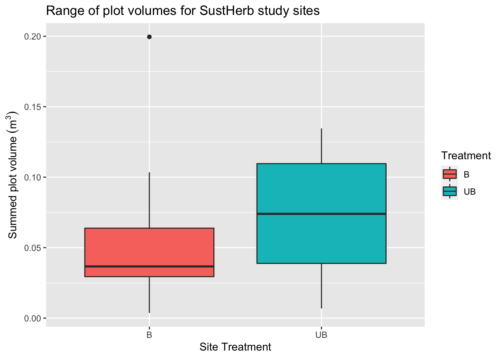
Histogram
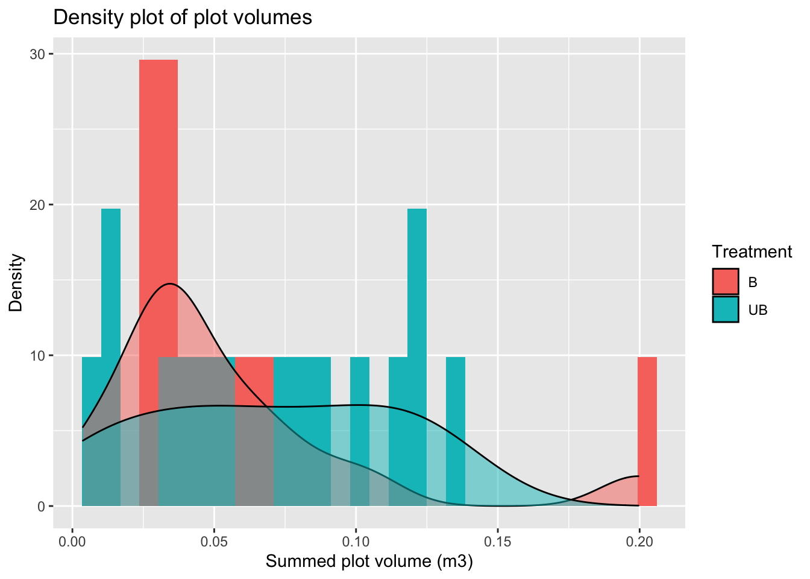
By Study Site
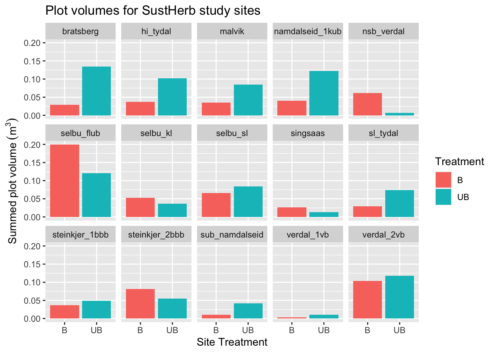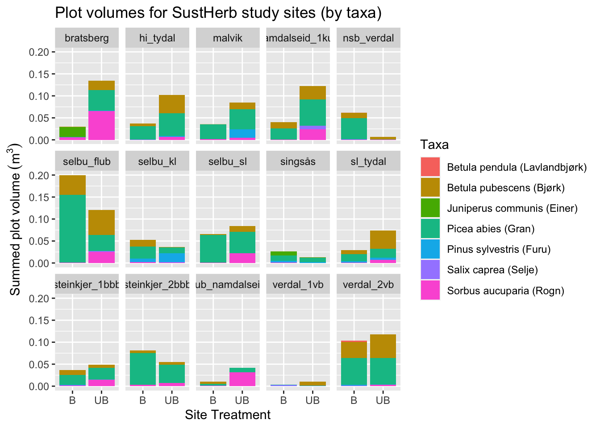
Albedo Estimates
Reasoning
I used the forest volume-based version of the albedo model developed by Hu et al. (2018) together with snow-water equivalent and temperature data from seNorge (described earlier) to produce plot-level albedo estimates for the year 2016. The albedo model produces monthly estimates for spruce, pine, and birch forest (which encompasses all other deciduous species).
I decided that it might be useful to create a composite albedo value for each plot (for each month), which would allow for simple comparison of albedos at the plot level. For a given plot in a given month, the first step in creating a composite albedo value is to multiply each species-specific albedo value (produced by the model) with the corresponding species proportions for the plot. This produces three 'fractional albedo' values, which are then summed to produce a 'composite albedo' value:
\[C_{ij} = (A_{ij}S_{jk}) + (A_{ij}S_{jk}) + (A_{ij}S_{jk})\\\;\\C=composite\;albedo\\A = species\mbox{-}specific\;albedo\\S = species\;proportion\\i = month\;(1\mbox{-}12);\;j = plot;\;k = species\;(spruce,\;pine,\;birch)\]
What do you think about this 'composite albedo'? Is it a reasonable way of assessing albedo across plots?
Method
- For a given plot, I ran a function to produce 12 albedo estimates (one for each month of the year)
- This function incorporated the summed volume (m3) estimate for the plot, as well as 12 values for both average snow-water equivalent (mm) and temperature (K). It used the albedo model form described earlier with species-specific coefficients to produce species-specific albedo estimates for each month of a single year.
- The function then used the relative proportion of spruce, pine, and birch trees to calculate composite albedos (as described in the reasoning section).
- For each plot, the function produced a total of 12 composite albedo estimates (one for each month of the year). Thus, the final albedo dataset contains 360 albedo estimates (12 per plot, 180 per treatment).
Results
Albedo
Time Series
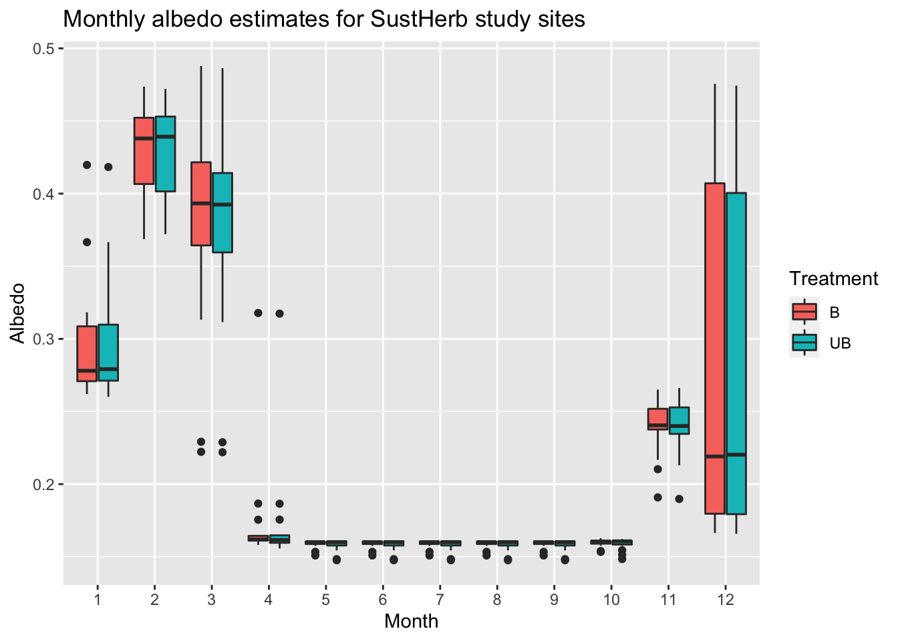
By Site
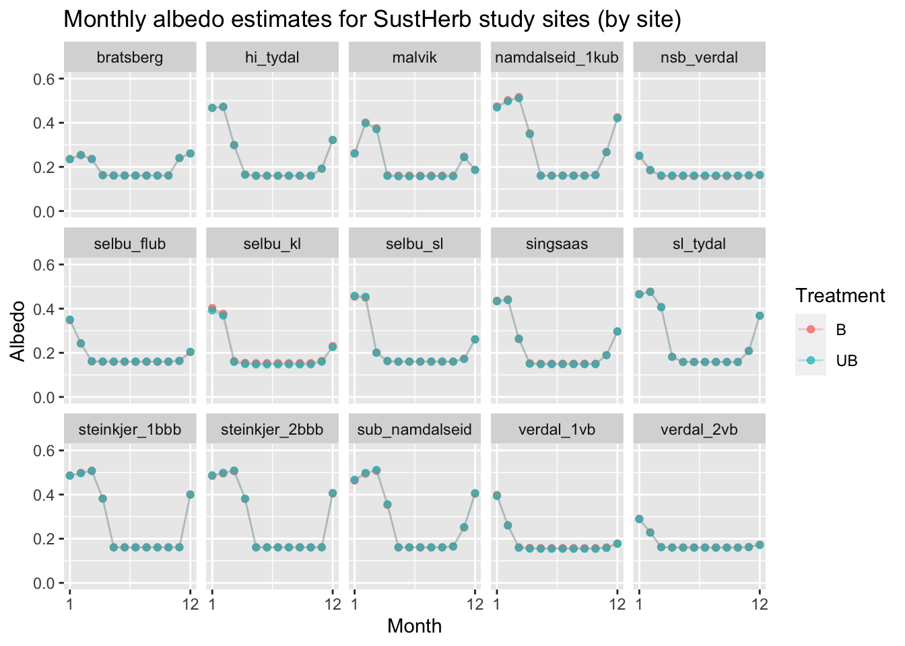
By Age
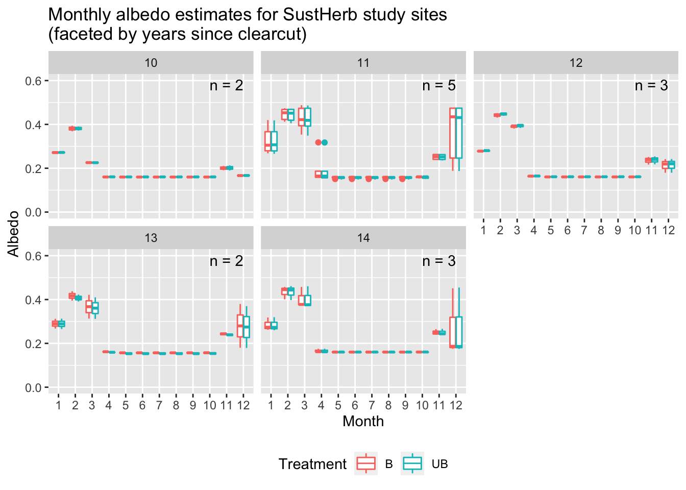
Model
Correlation Matrix
I created a correlation matrix to investigate possible correlations between continuous explanatory variables (which would ultimately affect the stability of the final model). It appears that Roe Deer Density has a relatively strong correlation with moose density. 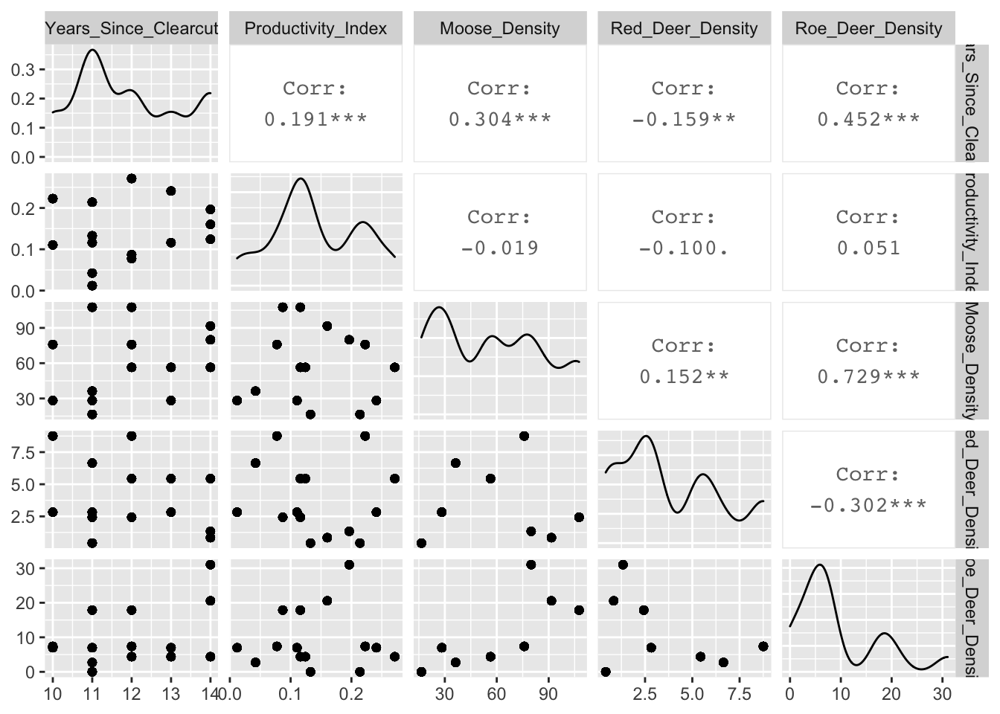
Model
Due to the setup of the study design and non-independence of data within each study site (i.e. 2 plots per study site, not independent of each other), I believe we'll need to use a linear mixed effects model to model estimated albedo as a function of treatment (moose exclusion). I gave a "first attempt" at a model below - this model was implemented via the lme4 package in R w/ lmer function). As discussed in the 'correlation matrix' section, Roe Deer Density was removed as a potential variable due to strong correlation with moose density. I specified the "LocalityName" variable as a random intercept, in order to account for non-independence of data at the level of the study site. The main fixed effect of interest (treatment) was then specified as an interaction with month.
To select a 'best' model, I started off with a base model with all of the variables of interest, and then eliminated terms that weren't significant. From this 'filtered' model, I created several other versions based on what I thought might be best. I then used the AIC function to calculate AIC values for each model. Finally, I chose the model with the lowest AIC value as the 'best' (below).
#Initial model:
lmer(Composite_Albedo ~
Treatment*Month +
Canopy_Height_MAD +
Years_Since_Clearcut +
Moose_Density +
(1 | LocalityName),
data = model_data)| Composite_Albedo | |||
|---|---|---|---|
| Predictors | Estimates | CI | p |
| (Intercept) | 0.26765 | 0.15180 – 0.38351 | <0.001 |
| Treatment [UB] | 0.00084 | -0.02900 – 0.03067 | 0.956 |
| Month [2] | 0.13363 | 0.10420 – 0.16305 | <0.001 |
| Month [3] | 0.08296 | 0.05354 – 0.11239 | <0.001 |
| Month [4] | -0.12209 | -0.15151 – -0.09266 | <0.001 |
| Month [5] | -0.13776 | -0.16719 – -0.10834 | <0.001 |
| Month [6] | -0.13776 | -0.16719 – -0.10834 | <0.001 |
| Month [7] | -0.13776 | -0.16719 – -0.10834 | <0.001 |
| Month [8] | -0.13776 | -0.16719 – -0.10834 | <0.001 |
| Month [9] | -0.13776 | -0.16719 – -0.10834 | <0.001 |
| Month [10] | -0.13714 | -0.16657 – -0.10772 | <0.001 |
| Month [11] | -0.05638 | -0.08581 – -0.02696 | <0.001 |
| Month [12] | -0.01899 | -0.04842 – 0.01043 | 0.206 |
| Canopy_Height_MAD | -0.00230 | -0.01633 – 0.01173 | 0.748 |
| Years_Since_Clearcut | 0.00397 | -0.00605 – 0.01399 | 0.437 |
| Moose_Density | -0.00031 | -0.00074 – 0.00012 | 0.160 |
|
Treatment [UB] * Month [2] |
-0.00122 | -0.04283 – 0.04039 | 0.954 |
|
Treatment [UB] * Month [3] |
-0.00104 | -0.04265 – 0.04057 | 0.961 |
|
Treatment [UB] * Month [4] |
-0.00070 | -0.04231 – 0.04092 | 0.974 |
|
Treatment [UB] * Month [5] |
-0.00085 | -0.04246 – 0.04076 | 0.968 |
|
Treatment [UB] * Month [6] |
-0.00085 | -0.04246 – 0.04076 | 0.968 |
|
Treatment [UB] * Month [7] |
-0.00085 | -0.04246 – 0.04076 | 0.968 |
|
Treatment [UB] * Month [8] |
-0.00085 | -0.04246 – 0.04076 | 0.968 |
|
Treatment [UB] * Month [9] |
-0.00085 | -0.04246 – 0.04076 | 0.968 |
|
Treatment [UB] * Month [10] |
-0.00078 | -0.04240 – 0.04083 | 0.971 |
|
Treatment [UB] * Month [11] |
-0.00067 | -0.04229 – 0.04094 | 0.975 |
|
Treatment [UB] * Month [12] |
-0.00077 | -0.04238 – 0.04084 | 0.971 |
| Random Effects | |||
| σ2 | 0.00 | ||
| τ00 LocalityName | 0.00 | ||
| ICC | 0.24 | ||
| N LocalityName | 15 | ||
| Observations | 360 | ||
| Marginal R2 / Conditional R2 | 0.796 / 0.845 | ||
Is this model correctly specified? Should I be using a non-linear mixed effects model (nlme) instead?
Diagnosis
It certainly looks like something strange is happening with the residuals. Not sure why there is this linear trend at lower fitted values:
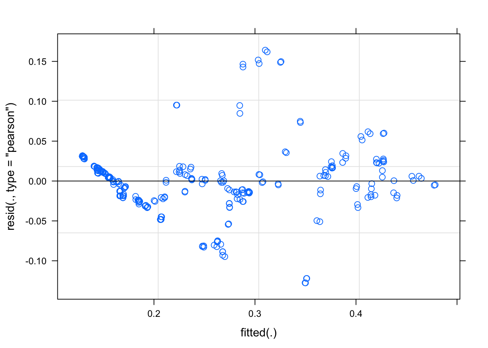
Next Steps?
Better Model Selection
After looking at the residuals plot for the model in the previous section, I'm not convinced that I'm using the correct model. It's clear that the amount of variation in albedo estimates varies substantially by month (ex. the variation in albedo is much greater in December than in July). Do I need to set a specific 'covariance structure' to account for this?
Also, I'm a bit confused about specifying "Month" as a fixed effect vs random effect. We're interested in seeing how treatment (moose exclusion) affects albedo for each month - therefore, it's necessary to add "Month" as a fixed effect together with treatment. However, would it be relevant to add "Month" as a random effect as well/instead? For a given plot, the data from Month 1 will likely be more similar to data from Month 2 than data from Month 8 (i.e. there is non-independence in data across months). How do we handle this?
Backfitted Models to Improve Sample Size
I'd really like to use the backfitted height-only biomass models produced by Kolstad et al. (2017) to estimate volume (and ultimately, albedo) for a greater number of SustHerb sites, as well as for additional years (not just 2016). I'm planning on doing this, but haven't gotten around to it yet.
Variation in Albedo
I'd also like to investigate how treatment (i.e. moose exclusion) affects variation in surface albedo. This isn't a parameter I'd considered looking at before, but it would certainly be interesting if moose exclusion has some type of effect on how much albedo varies across a landscape (and may have important climate implications, too). Maybe MAD would be a good metric to look at?